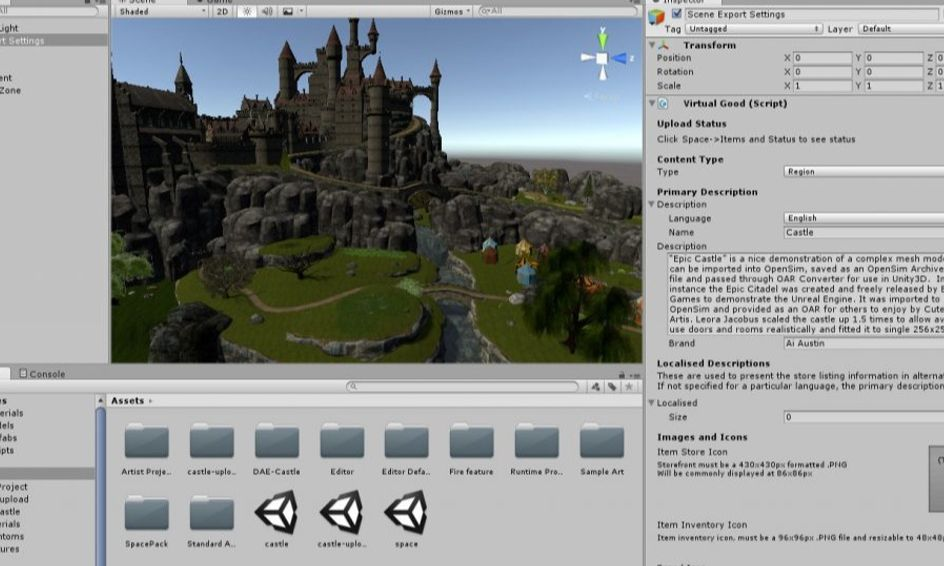
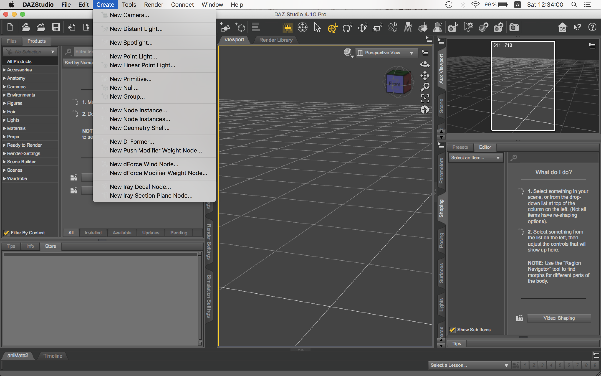
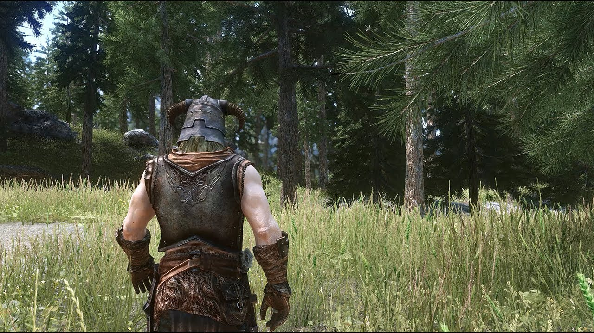

Source code of my latest projectI've always wanted to be a computer programmer. <Click to learn more>
While personal computers were a new thing during my junior high school days, I knew from a very early age that I wanted to work with computers. Fortunately I've been able to make a living in technology from the time I graduated high school until this present day. Starting out in data entry for a major worldwide business at age 18, I moved up to become the data operations supervisor for a large business within a year. As I wanted to be a computer programmer, I started in college at that time, but computer programming back then was nothing like it is now, so I just wasn't interested in writing business programs in COBOL and didn't continue to pursue it. From there I joined the Navy and became an Electronics Tech in a forward deployed squadron of ships during Operation Desert Storm. After my military service, I moved through several jobs working with agriculture and office electronics, but none of those really seemed to suit me very well, so I took a position as the sales and service manager for a computer business. While I enjoyed the work, I wanted to do more in the tech field, so I transitioned over to education working as a technology director and K-12 computer teacher.
Fast forward a couple of decades and I find myself more and more interested in computer programming. I've dabbled in computer graphics and game design for a few years, but couldn't get to where I wanted to because I didn't know how to program. I taught myself the basics, but never really had the time to put into it to get where I needed to be ... until now. Now I've decided that I want nothing more than to become a professional programmer, so I'd like to learn what I need to in order to make a career change. I know a bit of HTML/CSS, Python, C#, and now JavaScript since I've joined LaunchCode ... and I'm committed to doing whatever it takes to complete the adventure I've embarked upon and I can't wait to see where it takes me. Yes, LaunchCode has been very good for me and I'm very happy to have this chance to start living my dream.

Level design scene from my latest projectI enjoy creating 2D/3D video games in Unity. <Click to learn more>
A few years ago, the school I was working for had some budgetary issues and my hours were decreased. As I was still making good money, I continued to work less hours while I looked for something to make up for the loss of income. Unfortunately, there wasn't much in my area worth my time to pursue, so I decided to pursue something that I'd enjoy to better my quality of life as opposed to suppliment my income. In comes the Unity game engine. I like video games (well, at least I like Skyrim) and I like to create things, so I thought I'd give it a go.
Spending a few years at making games part-time was definitely fun, but there was so much to learn as an indie game developer, and while I learned a lot and could do many wonderful things, I found that I lacked the one skill that I needed more than anything else ... computer programming. While I was able to teach myself the basics of C# to work in the Unity game engine, I found it increasingly difficult to create the game (yup, you guessed it, Skyrim) that I really wanted to make by myself, especially with limited skills in programming. As time went on, I found a second job in education and no longer had time to pursue computer programming or game design.
As more time has passed, I've found that I still have a desire to code and create video games, so I've started relearning the tools, as everything has changed so much over the past few years -- especially in the field of computer programming. Now, I'm back down to working only one job with full-time hours, but less income, so now I know it's time to make the career change that I've long wanted to do. Who knows? Maybe I'll get tired of waiting on Bethesda to release more Skyrim content or the much anticipated Elder Scrolls VI, and make something similar of my own. While that may be jumping the gun a bit at this point, it does give me something to hope for. So, keep your fingers crossed.

Art design from my latest projectI enjoy creating digital art with DAZ Studio. <Click to learn more>
Another thing I've played around with for many years is digital art. I've worked in Photoshop, Poser, DAZ Studio, and Vue over the years, but have more or less settled into working with just DAZ Studio as time went by. While the software is now free, unfortunately most of the quality content is not, so its quite an expensive hobby to be involved in. But it's pretty cool to create your own amazing art. While I used to be a fairly good artist with a pencil and drawing pad, it's not something that I kept up with, so I'm limited in what I can do, but I still have fun with it and it goes very well with my other interests in game design and creative writing. Having dabbled in 3D modelling with Maya, Blender, and Hexagon, I find it interesting, but not one of my greatest interests or talents.
Unfortunately, my free time is limited, and with several things that I enjoy doing, I have to pick and choose what to spend my limited time on. Therefore I've become quite a jack of all trades, but master of none in my chosen hobbies. But again, I enjoy what I do in each of them, so maybe someday, time permitting, I'll be able to combine all of my interests into one big project and have the time of my life. Now wouldn't that be nice? Yup. That it would.
Storyline of my latest projectI creative writing. <Click to learn more>
I've always had a very vivid and active imagination. As far back as I can remember, I've read and read a lot ... and mostly medieval fantasy novels. Stories from the likes of J.R.R. Tolkien (the Hobbit and the Lord of the Rings) and Robert E. Howard (Conan) filled my childhood and gave me a desire to live another life of magic and adventure. As I grew up, I spent more and more time reading books and playing Advanced Dungeons & Dragons ... all of which fueled my imagination and drove me to write games and stories of my own.
Sadly, I never pursued writing as a career. As I got older, I had more and more responsibilities that drove me into the working world and limited the amount of time that I had to write and play games. As I moved about from one place to another, and from one job to another, I eventually stopped both altogether. Those were less imaginative times and it seemed a large part of who I was was no longer a part of me ... until one day, I decided to start writing again. That was a good day and one that I look back on and appreciate the decision. Unfortunately, while I started writing again, I wasn't able to find anyone to start playing Dungeons & Dragons with again. There was an occasional game here and there, but no one made the game as fun as it was when I played with my friends from my childhood, so I've sadly let that slip away. Now, the thought of putting that much time and effort into something like that doesn't even seem possible with the busy life I now live. But that doesn't prevent me from writing. Fortunately, that's something that I can do in short bursts as I'm able to find the time to do it.
Yup, that's a good thing and has helped me work through a lot of issues in my life, as I can meditate on things and translate them into my writing. A very good therapy, or atleast it has been for me over the years. And while I've written a few things, I've never really tried too hard to get published. While I'd like to be able to just write for a living, it almost seems like a betrayal to my stories to share them with the world, so who knows? Maybe one day the world at large may get the opportunity to read something I've written. But ... just maybe.
This is an original flash fiction of approximately 500 words that I've written. Additionally, I created a computer synthesized narration of the text, as well as a live recording voiceover, that I've added ambient music and sound effects to.
the Burden
I knew it was a rookie mistake the moment the polished metal edge of the guard on my right forearm brushed against the cold, rough stone of the tunnel wall. Without even glancing over to my left, I could see the glare in her eyes as she stared at me vehemently from behind the shadows. The heavy silence weighed us down, seeming to hang over us with the foreboding of the expected arrival of the alerted guards on watch. Freezing in place, I grip the hilt of my heavy long sword, and ready myself for the coming foray -- but it never comes.
Letting out a heavy sigh, my breath billows up in a cloudy mist that hangs in the cold air. I close my eyes for a quick moment before turning my head just far enough to the left to see that she has stepped out of the shadow of the wall and is once again moving forward. Slowly, I pull my right arm off the rough stone wall to keep it from making any additional noise that might alert anyone to our presence.
While it’s not my first time sneaking into a heavily fortified castle to commit a theft, a murder, or just to get some scrap of information that would be of value to someone with enough coin to make it worth my time -- she was the real pro. It was almost a burden for her to have me tagging along, and my rookie mistake was more than enough to prove to her that that was what I was to her on this job -- a burden.
Stepping away from the wall, I shift over to the same side of the corridor as her. Slipping in behind her, I crouch lower to try to blend in with the shadows as she was, but with the bulk of my size, especially in my heavy armor, I almost looked comical because there was no way that I was fooling anyone into thinking that I wasn’t really there.
My shoulders drop as I take in another deep breath and then flex my jaw as I bite down on my frustration. What am I doing here? I wonder to myself. She’s right. I’m a burden and shouldn’t have tagged along. But the others had insisted. It was the belief of those hiring us that stealth wouldn’t be enough to get what they needed. It would take muscle and the professional use of a sword -- both of which I possessed.
So I suck it up and continue following her down the long dimly lit corridor, but my mind is distracted, and I can’t help but feel that I’m out of place here. That I shouldn’t have come or that I may never leave. I was unusually cold. I rarely feel that way, even when others are complaining and searching for warmth. I don’t know why that is, but it sticks out in my mind as I dumbly track along behind her, still doing my best not to make any more noise or get in the way of her completing her mission.
Live Recording
Synthesized Narration
A computer synthesized narration of my Flash Fiction

Inspiration for my latest projectI like to play Skyrim (with lots of mods). <Click to learn more>
As I mentioned, I really enjoy playing Elder Scrolls V: Skyrim (Special Edition) with a lot of mods that enhance both gameplay and graphics. Even though it was released in 2011, it can still outshine and perform as well as the latest released video games if you have a computer that can handle all of the necessary graphics mods required to update it to 4K graphics. Fortunately, I do.
I grew up playing Advanced Dungeons & Dragons (AD&D) and its subsequent release of AD&D 2nd Edition. Although I played for a good decade, it remains to this day one of the things I miss more than anything else in life. Unfortunately, it's not as fun to play it alone, so over the years I've searched and searched for a single player video game to take its place. While it took many decades to find one, Bethesda's Elder Scrolls V: Skyrim was a perfect match. After reading about its pending release, I went out and bought an XBox 360 and prepurchased a copy of the game. While it was a bit older, I purchased the Elder Scrolls IV: Oblivion to play until Skyrim's release date on 11/11/11. Although Oblivion was fun, its graphics were dated, so it wasn't as immersive as I wanted it to be. Skyrim on the other hand, didn't disappoint. The game was as close as anything has gotten to good old D&D for me! Bethesda further expanded Skyrim's gameplay by adding 3 DLCs (Dawnguard, Hearthfire, and Dragonborn) the following year which kept the game going beyond its initial release date. But even that had an expiration date.
While the original game was fun on the Xbox, my main game save eventually corrupted, which caused me a lot of stress because my alternate life was fractured and no longer as immersive or fun ... so I switched from the Xbox 360 to the PC version. This was worth restarting my game for because of MODS! Mods add an all new dimension to the game that have kept it alive for another decade of play. Mods add new lands, new adventures, new NPCs, new weapons, new armor ... and incredible graphics that makes the original game pale in comparison ... even after Bethesda remastered it in high resolution graphics.
But now, even that has an expiration date and it's time for Bethesda to either release more Skyrim DLCs or the Elder Scrolls VI to give us something new to play. Unfortunately, Bethesda doesn't seem to be too keen to release the next evolution in the Elder Scrolls series, nor have they released any new content for Skyrim. Which is sad because I'd gladly pay more money to keep it alive.